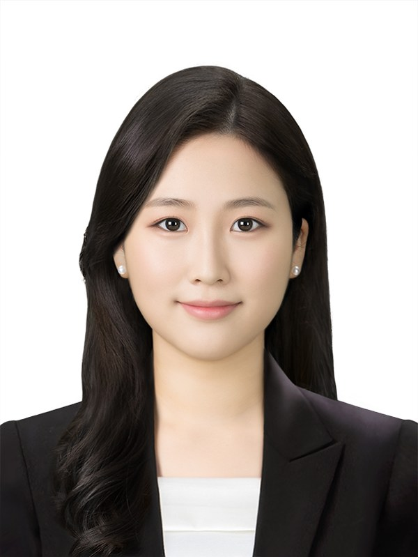

Data Scientist · AI Engineer
데이터를 기반으로 문제를 정의하고, 결과를 체계적으로 검증해 조건이 달라져도 재현되는지까지 확인하는 엔지니어입니다.

SHAP·LIME·LRP 통합 변수 선택법 설계, 변수 약 35% 축소에도 AUROC 향상·Sensitivity 유지, Nested CV와 외부 데이터셋 7개로 재현성 검증
이미지 단독 모델 대비 정상 오분류율 3.05% → 1.85% (39% 감소), 추가 파라미터 1.31%, 동등 기준을 정의해 비교 검증
센서 3종(EV·RFM·OES)으로 이상 웨이퍼를 감지하는 Autoencoder, 배치 쏠림을 막은 균등 Test 20%에서 Precision 0.80 · Recall 0.74 · AUROC 0.91 검증
일반 카메라 영상만으로 장애물 접근 위험을 판단하는 거리 계산 로직 설계, 자체 테스트셋·U-Net baseline 비교로 검증
공정별 700℃ 이하 저온 구간 위험 패턴 발견, SHAP과 EDA 두 방법으로 교차 검증, Recall 최우선 모델링
영상 없이 EHR만으로 뇌졸중 발생 가능성 선별, SHAP 근거 임상의 타당성 검토, 내부 검증 AUROC 0.820 · 민감도 0.896, 외부 기관 검증 AUROC 0.733
2D 화면 겹침의 오탐을 3D 깊이 비율로 걸러냄, 깊이 차이 35% 이내만 같은 위치로 인정, 단위 테스트 19개·스케일 불변성 테스트로 검증
수작업 threshold·포토샵 제거 과정을 ResUNet denoising으로 자동화, loss 0.002~0.011 수렴과 원본·예측·정답 비교로 검증
파이썬 학습 만화 기획·연재
2026.10 기준